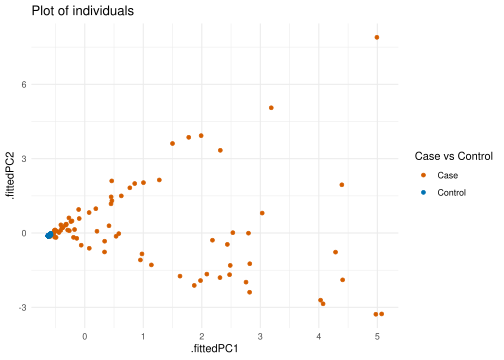
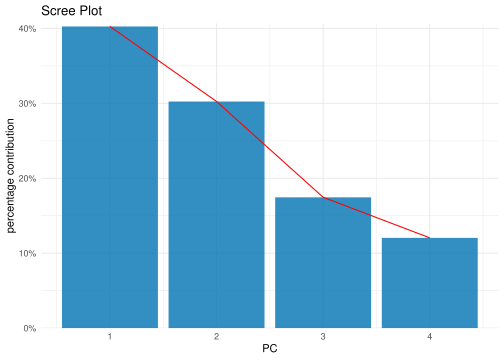
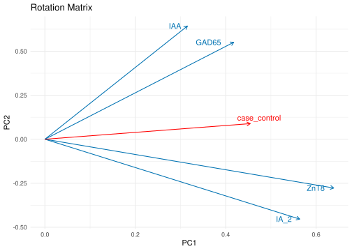

Rows: 216 Columns: 32
── Column specification ────────────────────────────────────────────────────────
Delimiter: "\t"
chr (16): sample_name, locus, sku, test_name, case_control, gender, ethnicit...
dbl (16): total_templates, productive_templates, fraction_productive, total_...
ℹ Use `spec()` to retrieve the full column specification for this data.
ℹ Specify the column types or set `show_col_types = FALSE` to quiet this message.
# principal component analysisdata_pca <- data |>select(case_control, GAD65, IA_2, IAA, ZnT8) |>select(-case_control)|>scale() |>prcomp()# plotting PC coordinates for individualsdata_pca |>augment(data) |>ggplot(aes(.fittedPC1, .fittedPC2, color = case_control)) +geom_point(size =1.5) +scale_color_manual(values =c(Case ="#D55E00", Control ="#0072B2") ) +theme_minimal() +labs(title ="Plot of individuals",color ="Case vs Control")

## Shows greater variability for case subjects, compared to very little variation for control subjects# plotting scree plot for varialbe variationdata_pca |>tidy(matrix ="eigenvalues") |>ggplot(aes(PC, percent)) +geom_col(fill ="#0072B2", alpha =0.8) +scale_x_continuous(breaks =1:9) +scale_y_continuous(labels = scales::percent_format(),expand =expansion(mult =c(0, 0.01))) +geom_line(aes(PC),color ="red") +theme_minimal() +labs(title ="Scree Plot",y ="percentage contribution")

## it seemns that ZnT8 contributes the most to both PC1 and PC4, out of all four variables. This might indicate a correlation between this variable and the other variables.arrow_style <-arrow(length =unit(0.2, "cm"), ends ="first")num_case_control_coord <-as.data.frame(cor(data$num_case_control, data_pca$x)) # plotting the rotation matrix, pc1 and pc2data_pca |>tidy(matrix ="rotation") |>pivot_wider(names_from ="PC", names_prefix ="PC", values_from ="value") |>ggplot(aes(x = PC2, y = PC1)) +geom_point(alpha =0) +coord_flip() +theme_minimal() +labs(title ="Rotation Matrix") +geom_segment(aes(xend =0, yend =0), arrow = arrow_style, color ="#0072B2") +geom_segment(data = num_case_control_coord,aes(xend =0, yend =0),arrow = arrow_style,color ="red") +geom_text_repel(data =as.data.frame(num_case_control_coord),aes(label ="case_control"),color ="red") +geom_text(aes(label = column), hjust =1.5, nudge_x =0, color ="#0072B2")

## case_control seems most strongly correlated with ZnT8, whereas ZnT8 and IA_2 seem most strongly correlated with each other, while IAA and GAD65 seem most correlated with each other. Ie. these are most likely to affect the results of the other.